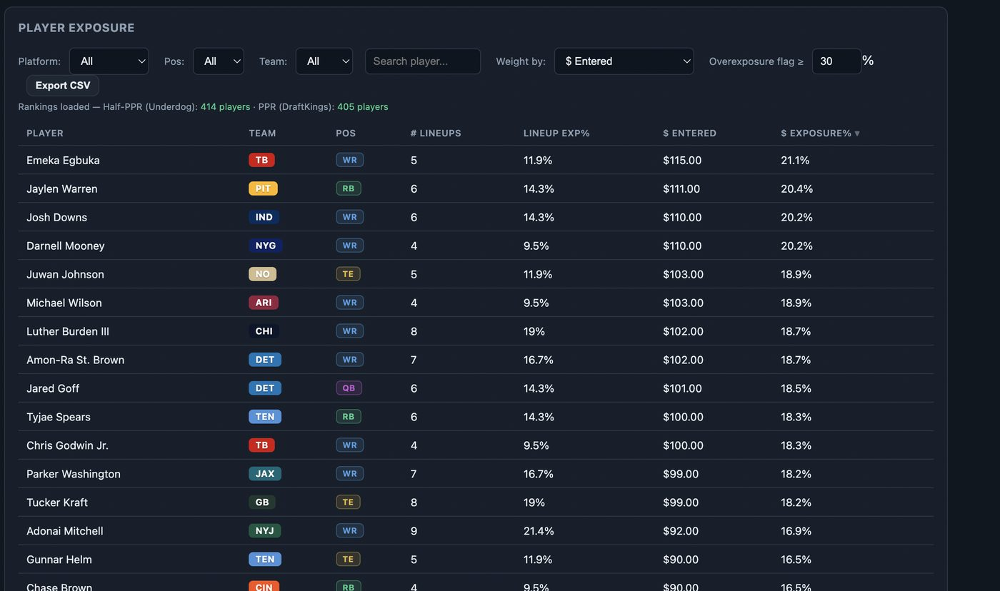
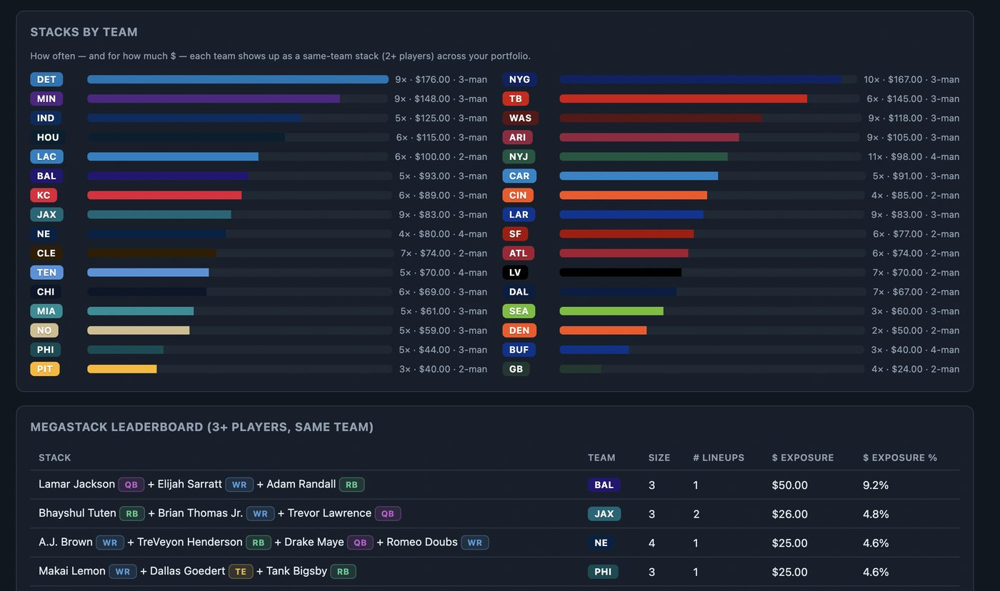
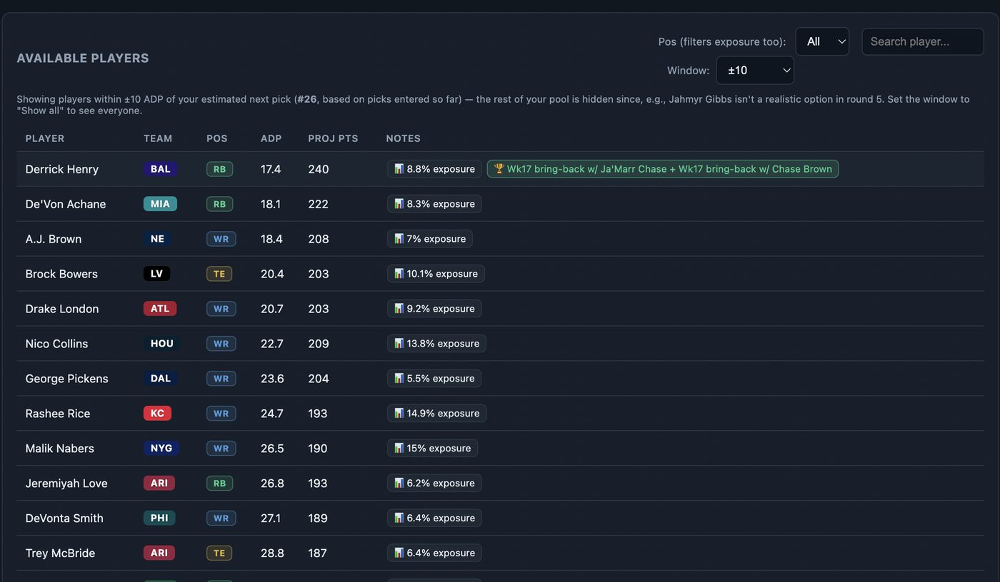

Things I've built — client work, side projects, and the repos I keep coming back to.
Two flagship builds up top, then the wider GitHub, then a couple of graduate coursework projects I can describe but can't link.
Best Ball Fantasy Football Tracker
A comprehensive tracker for best ball fantasy football spanning both Underdog and DraftKings, built in one continuous, collaborative build session with many iterative fixes along the way. It's the project I use to test out ideas fast — new features get scoped, built, and shipped in the same sitting.
- Exposure tracking across players, teams, and stacks
- Closing line value (CLV) tracking
- Playoff matchup projections
- Stack and correlation analysis
- Strategy archetype breakdowns
- Live draft assistant



AI-Assisted Rapid Prototype System
Rapidly prototyped and shipped a 10,000+ line full-stack application in 8 weeks using spec-driven, LLM-assisted development — guiding AI coding agents through system design and architectural tradeoffs while retaining full code review and QA ownership.
- Spec-driven development from ambiguous stakeholder requirements
- AI coding agents guided through architectural tradeoffs
- 10,000+ lines shipped in 8 weeks
- Full code review and QA ownership retained throughout
From the GitHub
github.com/shahrrsClustering and classification methods applied across three different datasets.
Jupyter Notebook AI-Python-ProjectsA set of Python projects working through different AI and ML algorithms.
Jupyter Notebook MyMallocA hand-built implementation of malloc, written from scratch in C.
C Polynomial-ProjectLinked-list based data structure for representing and operating on polynomials.
Java Train-Scheduling-SystemA scheduling system for trains built with JSP on the front end and SQL underneath.
Java · JSP · SQLGraduate coursework
described, not linkedA Java command-line tool built around rigorous test design: category-partition test methods, generated JUnit test suites, and the implementation to match.
OMSCS · Georgia Tech — school policy, no public repoA group Android project for comparing job listings, including Room database setup, unit and instrumented testing, and Appium-driven UI test automation.
OMSCS · Georgia Tech — group project, no public repoA 3D stealth-action game built in Unity with a 5-person team, playing a vampire infiltrating a cyberpunk city to reclaim a shattered relic. Built the AI and systems side: NavMesh-driven guard pathfinding, finite state machines for AI behavior, raycast-based vision detection, and gameplay systems including a blood/health economy, ability unlocks, and a minimap.
OMSCS · Game AI / Video Game Design — team project, no public repoA dodgeball game built in C# and Unity with AI opponents that scale in difficulty, and an AI-controlled ally team that has to out-throw them. Enemy and teammate behavior both run on finite state machines, layered with physics-based ball trajectory and throwing tactics.
OMSCS · Game AI — assignment, no public repoA self-driving race car built around a fuzzy logic controller in C#. Speed and track curvature feed a set of fuzzy rules that output throttle and steering values, letting the car brake into turns, hold a line through them, and accelerate back out — without any hard-coded if/else driving logic.
OMSCS · Game AI — assignment, no public repo